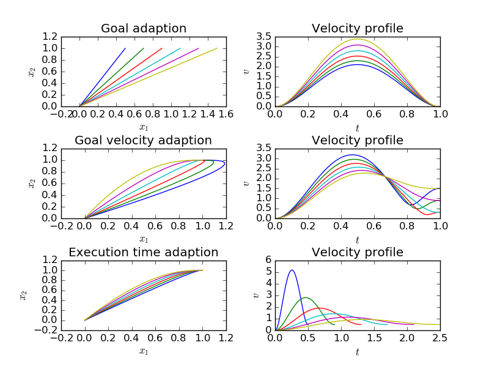

Demonstrate the influence of DMP meta-parameters. In the first row, we modify the goal. We could change the goal online as well, which would result in a smooth transition from the original to the modified trajectory. In the second row, the final velocity is modified and the execution time is modified in the third row.
print(__doc__)
import numpy as np
import matplotlib.pyplot as plt
from bolero.datasets import make_minimum_jerk
from bolero.representation import DMPBehavior
def dmp_to_trajectory(dmp, x0, g, gd, execution_time):
"""Computes trajectory generated by open-loop controlled DMP."""
dmp.set_meta_parameters(["x0", "g", "gd", "execution_time"],
[x0, g, gd, execution_time])
return dmp.trajectory()
x0 = np.zeros(2)
g = np.ones(2)
dt = 0.001
execution_time = 1.0
dmp = DMPBehavior(execution_time, dt, n_features=20)
dmp.init(6, 6)
dmp.set_meta_parameters(["x0", "g"], [x0, g])
X_demo = make_minimum_jerk(x0, g, execution_time, dt)[0]
dmp.imitate(X_demo)
plt.figure()
plt.subplots_adjust(wspace=0.3, hspace=0.6)
for gx in np.linspace(0.5, 1.5, 6):
g_new = np.array([gx, 1.0])
X, Xd, Xdd = dmp_to_trajectory(dmp, x0, g_new, np.zeros(2), 1.0)
ax = plt.subplot(321)
ax.set_title("Goal adaption")
ax.set_xlabel("$x_1$")
ax.set_ylabel("$x_2$")
ax.plot(X[:, 0], X[:, 1])
ax = plt.subplot(322)
ax.set_title("Velocity profile")
ax.set_xlabel("$t$")
ax.set_ylabel("$v$")
ax.plot(np.linspace(0, 1, X.shape[0]),
np.sqrt(Xd[:, 0] ** 2 + Xd[:, 1] ** 2))
for gxd in np.linspace(-1.5, 1.5, 6):
gd = np.array([gxd, 0.0])
X, Xd, Xdd = dmp_to_trajectory(dmp, x0, g, gd, 1.0)
ax = plt.subplot(323)
ax.set_title("Goal velocity adaption")
ax.set_xlabel("$x_1$")
ax.set_ylabel("$x_2$")
ax.plot(X[:, 0], X[:, 1])
ax = plt.subplot(324)
ax.set_title("Velocity profile")
ax.set_xlabel("$t$")
ax.set_ylabel("$v$")
ax.plot(np.linspace(0, 1, X.shape[0]),
np.sqrt(Xd[:, 0] ** 2 + Xd[:, 1] ** 2))
gd = np.array([0.5, 0.0])
for t in np.linspace(0.5, 2.5, 6):
X, Xd, Xdd = dmp_to_trajectory(dmp, x0, g, gd, t)
ax = plt.subplot(325)
ax.set_title("Execution time adaption")
ax.set_xlabel("$x_1$")
ax.set_ylabel("$x_2$")
ax.plot(X[:, 0], X[:, 1])
ax = plt.subplot(326)
ax.set_title("Velocity profile")
ax.set_xlabel("$t$")
ax.set_ylabel("$v$")
ax.plot(np.linspace(0, t, X.shape[0]),
np.sqrt(Xd[:, 0] ** 2 + Xd[:, 1] ** 2))
plt.show()
Total running time of the script: ( 0 minutes 1.154 seconds)